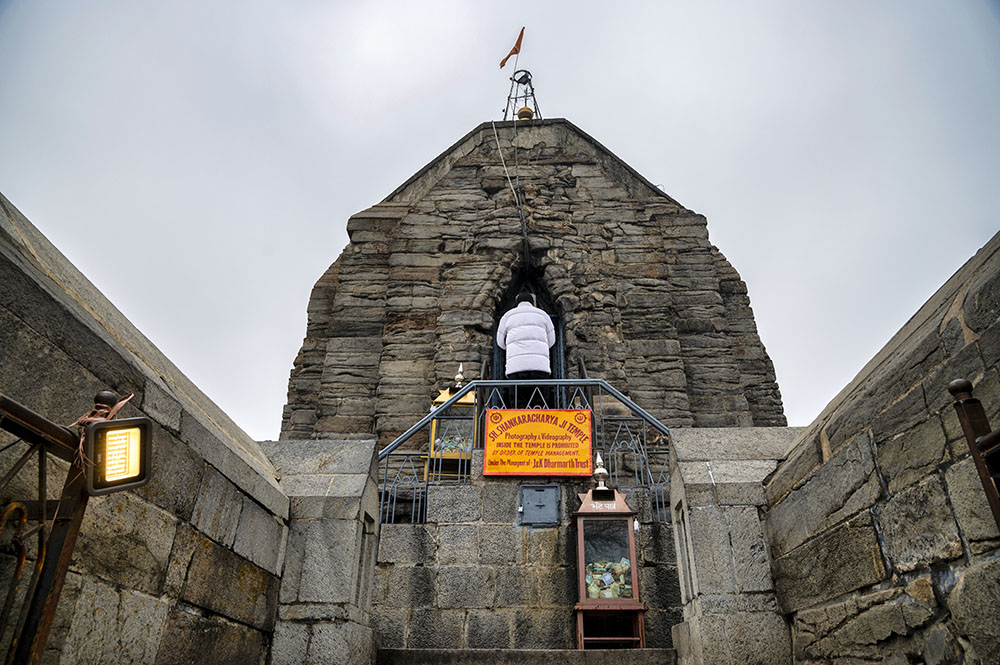
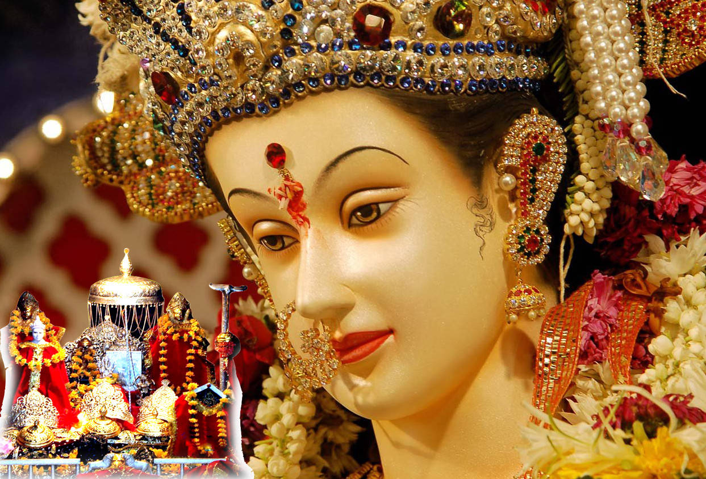

Explore Village: Srinagar
Location:
Srinagar is a major city and the summer capital of Jammu and Kashmir, located in the northern part of India. It is situated at an elevation of about 1,584 meters (5,200 feet) above sea level.
About Srinagar:
Srinagar is renowned for its picturesque beauty, with stunning landscapes that include serene lakes, lush gardens, and the majestic Himalayas in the background. The city is known for its rich history, vibrant culture, and unique local traditions.
Attractions:
- Dal Lake: Famous for its houseboats and shikaras (wooden boats). A major attraction for tourists.
- Mughal Gardens: Includes Shalimar Bagh, Nishat Bagh, and Chashme Shahi, showcasing stunning Mughal architecture and horticulture.
- Jama Masjid: An ancient mosque known for its wooden architecture and historical significance.
- Shankaracharya Temple: A revered Hindu temple offering panoramic views of the city and the lake.
- Royal Castle: A historic site reflecting the grandeur of the local royal heritage.
Local Cuisine:
Srinagar's cuisine is famous for its traditional Kashmiri dishes, including Rogan Josh (spiced lamb curry), Yakhni (yogurt-based curry), and Kahwa (spiced tea). The local food is known for its rich flavors and aromatic spices.
Famous Temples:

Shankaracharya Temple

Shri Mata Vaishno devi

Royal Castle